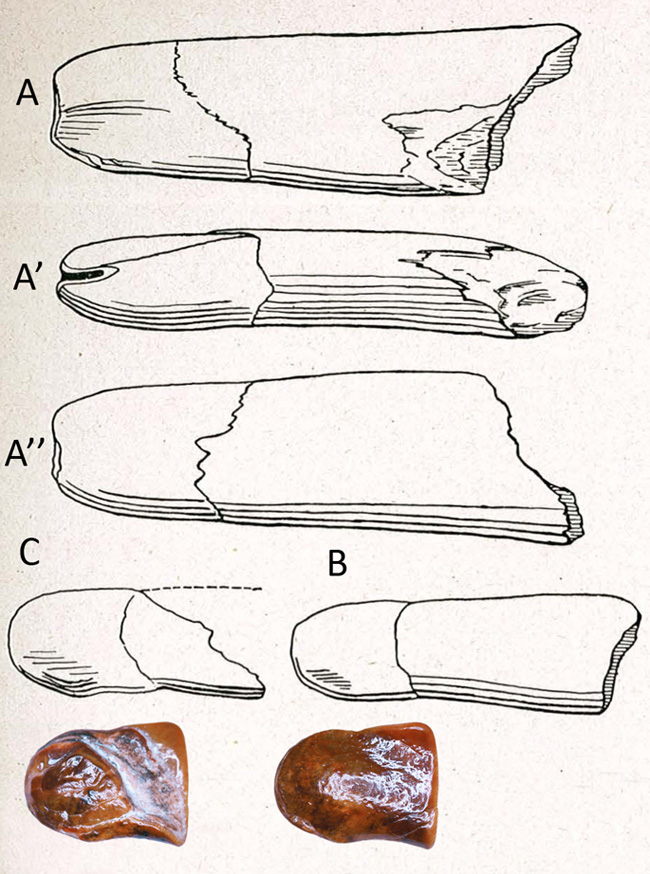

En savoir plus

Voici l’analyse faite par Stehlin en 1925. Ses déductions sont très intéressantes.
549 – JD inférieure gauche, incomplète à l’extrémité racine. Figure 27 A.
673, 550. – JD inférieure gauches, semblables mais plus petites et plus endommagées aux racines. Figure 27 B, C.
"C’est par exclusion de toutes les autres possibilités que je suis arrivé à voir dans ces dents des incisives de lait de Dinotherium. Elles ne proviennent sûrement pas d’un mastodonte; j’ai eu l’occasion d’étudier des incisives de lait supérieures et inférieures de mastodontes bien conservées, les unes et les autres en diffèrent considérablement. On peut trouver aux plus petites (673, 555) quelques ressemblances avec des incisives inférieures de Rhinocéros; mais il y a des différences considérables dans la section de la couronne, dans la relation entre la couronne et la racine, dans l’allure de cette dernière. La dentition antérieure de Macrotherium (Anisodon) ne comprend pas non plus un élément semblable.
A 549, qui est la plus complète, la racine peut avoir perdu un tiers ou la moitié de sa longueur, intacte elle a dû être trois ou quatre fois plus longue que la couronne. Au plan de fracture on constate que la cavité pulpaire était encore assez large et la racine n’avait pas encore achevé sa croissance.
Couronne et racine sont aplaties du côté supérieur, convexes du côté inférieur. La largeur de la racine augmente de la base de la couronne au point où elle est cassée. Vue de profil la dent est légèrement courbée dans le même sens que la défense définitive de Dinotherium, ce qui est tout en faveur de ma détermination. Du côté inférieur, grâce à un faible bombement, la couronne fait un peu saillie sur la racine, du côté supérieur et sur les bords interne et externe le passage de la première à la dernière est insensible et la limite de la couronne ne se marque que par celle de l’émail. Du côté externe la couverture d’émail s’étend un peu plus loin que du côté interne.
La face supérieure aplatie et même un peu concave de la couronne est bordée par un pli tandis que du côté externe elle se replie insensiblement dans la face inférieure convexe. Le bord antérieur de la couronne est peu endommagé. Sur son bord externe on remarque une usure qu’on est tenté d’attribuer à l’action d’une antagoniste.
Les dents 673 et 550 plus petites et à racines moins complètes se distinguent de 549 par un faible étranglement sur la limite de la couronne et de la racine; sur la 550 on remarque en plus une saillie obtuse sur le bord externe de la couronne. Malgré ces différences, l’analogie entre ces 3 échantillons est si grande que je ne doute pas de leur identité. Le grand exemplaire 549 peut-être un peu plus évolué que les 2 autres. "

Figure 27 Dinotheirum Cuvieri Kaup, JD inférieures gauches.
A Pontlevoy 549 vues par ses faces supérieure, externe, inférieure.
B Pontlevoy 673 vue par sa face supérieure.
C Pontlevoy 549 vue par sa face supérieure.
A mon avis le texte comporte 2 erreurs, la position naturelle des dents n’est pas à plat mais sur un rebord. Ensuite il est douteux que l’usure soit occasionnée par une incisive de lait supérieure, jamais retrouvée jusqu’à maintenant. |